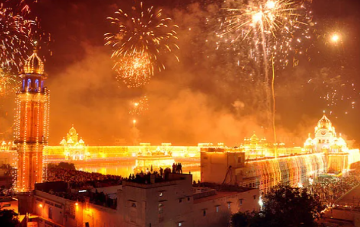
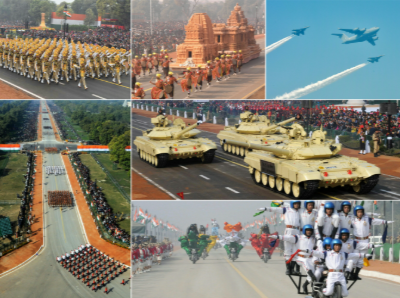
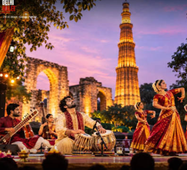

Diwali
The festival of lights. Markets and homes are decorated with lamps and lights.
Jump to:
| Dish | Where to Try | Type |
|---|---|---|
| Chaat | Chandni Chowk | Veg |
| Parathe | Paranthe Wali Gali | Veg |
| Chole Bhature | Paharganj | Veg |
| Momos | Majnu Ka Tila | Veg / Non-veg |
| Butter Chicken | Old Delhi | Non-veg |

The festival of lights. Markets and homes are decorated with lamps and lights.

Every 26 January, a grand parade is held on Kartavya Path.

A music and dance festival held near Qutub Minar.